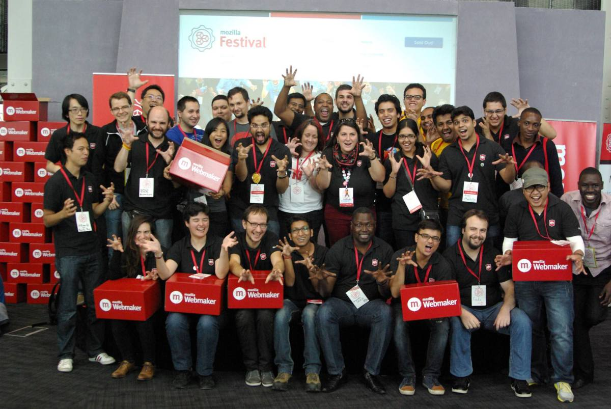
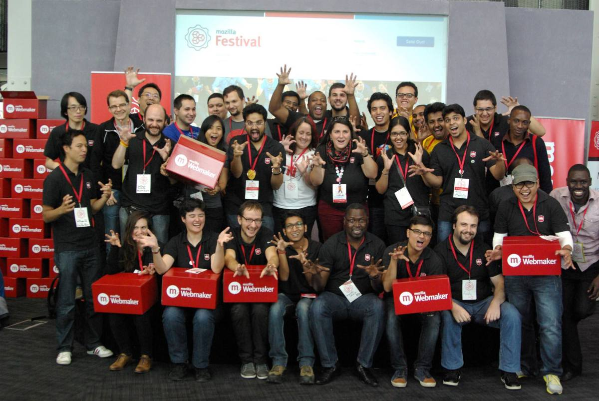

I believe that inspiration is everywhere, one needs to look around with an open perspective.
Web Engineering Intern (May 2014 - July 2014)
In the summer of 2014, I was a part of an incredible team at PayClip, working together with a vision to revolutionize the payment industry in Latin America. I was easily convinced by PayClip's ambition to solve real problems, their impact and the sheer amount of technical challenges in the payment space.
From design to development, I took full ownership to three major projects during my internship period - Internal Monitoring Dashboard (AngularJS, NodeJS, MongoDB, Redis), Logistics Dashboard (AngularJS, NodeJS, MongoDB) and Payment Web Widget (JQuery).
 It was my first-date with Silicon Valley and I was not disappointed. Surrounded by the very best in the industry, the experience was the best learning and growing experience I've ever had.
It was my first-date with Silicon Valley and I was not disappointed. Surrounded by the very best in the industry, the experience was the best learning and growing experience I've ever had.
I spent a good amount of time designing architectures and writing features. Quick prototyping approach followed by repeated refactoring and testing made sure I had many development cycles. Refactoring almost half the codebase in the first 10 days was a common thing in my projects. I could literally feel the evolution of code from the first iteration to the final production code.
In addition to many technical challenges that I faced during my time at PayClip, I cherish the invaluable lessons that I learnt during my stay. I ended up going to many hackathons, meetups, talks and recreational events which included - snakes, bikes, football, food, and more food - during my short stay in the Bay Area.
Mozilla Representative (July 2013 - Present)
It is something special to be part of an organization whose sole mission is to promote openness, innovation and opportunity in the web. Being a Mozilla Rep has provided me the perfect platform to motivate myself to collaborate and contribute to build a better web.
I have always been a strong advocate of the Open Web and mostly involved with Mozilla by either writing code, volunteering in events, helping local communities or encouraging people to contribute.
 Mozilla gives me the feeling of doing good and being part of an amazing community of technologists, innovators and doers, who are constantly working to advance the state of the web and keep it open. Moreover, it perfectly fits my ulterior goal to improve lives of as many people as possible and make a difference in the world.
Mozilla gives me the feeling of doing good and being part of an amazing community of technologists, innovators and doers, who are constantly working to advance the state of the web and keep it open. Moreover, it perfectly fits my ulterior goal to improve lives of as many people as possible and make a difference in the world.
Once, I drove over 11,000 miles across 40 US States in 25 days to share to raise awareness about Mozilla and it's mission.
After traveling around the States to share the true story about Mozilla, my relationship with her has gotten even more stronger. I consider myself to have the coolest non-job on this planet where I get to collaborate, organize Webmaker activities, attend the largest gathering of Makers or discuss future plans to support Mozilla initiatives in North America.
Software Dev Intern (Dec 2013 - May 2013)
The internship at MIC was a special treat to one of my long term goal to foster innovation and growth in local communities in Nepal. I consider myself super lucky to have been able to contribute both as a facilitator and developer in my short period as an intern.
I built a Dashboard framework(AngularJS, NodeJS, MongoDB), Nepali-English Date Converter App(C# & JavaScript) and fascilitated talks and sessions (Cloud Computing & Open Web) for students and communities.
 The time I spent at MIC was a mix of creating things, motivating students, promoting technology and having fun. The internship helped me re-discover myself as someone who enjoyed learning and teaching and being part of a big student community.
The time I spent at MIC was a mix of creating things, motivating students, promoting technology and having fun. The internship helped me re-discover myself as someone who enjoyed learning and teaching and being part of a big student community.
Alongside shipping multiple projects, I took ownership in building a Dashboard framework (AngularJS, NodeJS, MongoDB) that was real-time, scalable, reusable and flexible. The framework was built to help any team setup up their own dashboard environment with ease.
We also developed a Nepali-English Date Converter App in both Windows 8 and Windows Phone platforms. The date converter was later ported to JavaScript and released as open-source. It was later used for various other apps like Nepali Calender and a public Web API was also built from it.
 I fascilitated three 5-day sessions to build Microsoft Office Apps using the Open Web technologies. Hundreds of Office Apps were built by students during the training sessions. In addition to the above, I was also part of GWAB (Global Windows Azure Bootcamp) team to faciliate and spread the word of cloud computing in Kathmandu region.
I fascilitated three 5-day sessions to build Microsoft Office Apps using the Open Web technologies. Hundreds of Office Apps were built by students during the training sessions. In addition to the above, I was also part of GWAB (Global Windows Azure Bootcamp) team to faciliate and spread the word of cloud computing in Kathmandu region.
Co-founder (Aug 2010 - June 2013)
fortystones was a brain-child of five freshmen engineering students to set a platform to grow and share our knowledge of the web to the world. Born as a college dorm-room project, our platform later went on to touch the lives of over 550,000 people across 21 countries and 12,000 cities.
Through writing articles, tutorials and reviews, building श्री, this was our humble attempt, as young students, to make a tiny-winy impact in the world.
 I believe that we are on this planet for a reason and the interconnectivity of the web helps create a better society. We understood this early, and hence the web saw the birth of a small initiative called - fortystones.
I believe that we are on this planet for a reason and the interconnectivity of the web helps create a better society. We understood this early, and hence the web saw the birth of a small initiative called - fortystones.
Each post that we shared was called a stone and each stone was ‘engraved’ with information that we found interesting or fun. Although we bid farewell to fortystones, I am truly happy that fortystones became an invaluable part of my undergraduate life. Back then, we weren’t professionals or experts in any field, rather we were a bunch of guys with a passion to learn and share. And I believe we did a pretty good job.
I have always been fascinated by information and social networking. Scoop was an experiment to play around with both of them during my undergraduate days.

A platform for students to share any information, trending news, articles or stories within the university. This was way before when facebook was 'the thing' and groups weren't omnipresent. Back then, pushing emails to everyone wasn't ideal if one wanted to share focused piece of news. Scoop solved this problem.
Technologies: PHP, MySQL, WordPress.

श्री was less a hobby project and more a desire to build something that I use on a regular basis. Instead of using just-another-transliterate, I and @rabi_shah decided to build a phonetic translator called - श्री, that converted English text to देवनागरी script.
The impact? श्री went on to help thousands of people, and was forked and used in other Nepali applications.
Technology: JavaScript.
Graph Database is a technology which abstracted data in the form of nodes, edges and properties for highly associative data. This project was developed completely out of sheer curiosity on the then new concept of NoSQL Graph databases. My curiosity inspired me to go ahead and make one instead.
Given the timeframe and experience, it was quite an ambitious project as our first mini-project, but our efforts were duly acknowledged through a paper publication. The paper went on to be cited by some other papers (I, II) too.
Technology: Java.
Think of Siri without any voice commands. That's what we tried to build in our junior year in college. Without any experience in Natural language Processing, we dived into this topic totally out of curiosity to do something that really seemed interesting and exciting to us.
The whole idea was to build a system that would understand and respond to a user's question. It involved understanding the semantic of a English language sentence that queried into an ontology for the necessary result and gave a response to the user.
Technologies: Java, SPARQL, RDF/XML, Stanford Parsers.
The idea behind this project was to use the concept of Semantic Web for obtaining interoperability between hospitals for extraction and collection of useful medical data.
Within a time-span of few months, we were able to build a complete semantic web infrastructure, play with real hospital data and also, publish a journal.
Technologies: Java, SPARQL, RDF/XML.
I love to learn, create and explore new things. Life experiences have taught me to be optimistic and always have a positive mindset.
A good son, student, teacher, volunteer, entrepreneur, motivator, explorer, technologist, reader, foodie - I believe that anyone can become the person they want to be in life. I am constantly learning and trying to be better than my-yesterday-self.
My work ethic mantra - Work Smart, Honesty and Responsibility.
One of the ulterior goals of my life is to make a difference in this world by creating things that brings values in people's lives. As I take daily actions and pursue my passions to accomplish this goal, I’ll also continue my inner quest to understand life, explore this world, and stay curious.
In pursuit of my passion to raise awareness about Mozilla and the Open Web, I traveled to 40 United States in 25 days. Not an avid traveler but I love exploring new cities. Impromptu weekend plans get extra preference.
41 / 50 US States
I love experimenting in the kitchen. All my recipes are open-sourced and can be accessed through - Be Your Own Master Chef (BYOMC) Series. For me, cooking is one of small things in life that I enjoy doing.
The idea of being a part of a community of passionate people working selflessly towards a common goal has inspired me to organize many events and meetups in the past.
To name a few of them - PHP Devs monthly meetups in Kathmandu Valley, and Developers’ Meet Nepal which was the first attempt to gather all professionals and enthusiasts from all major tech communities in Nepal. We did organize few casual hackathons as well.

 
